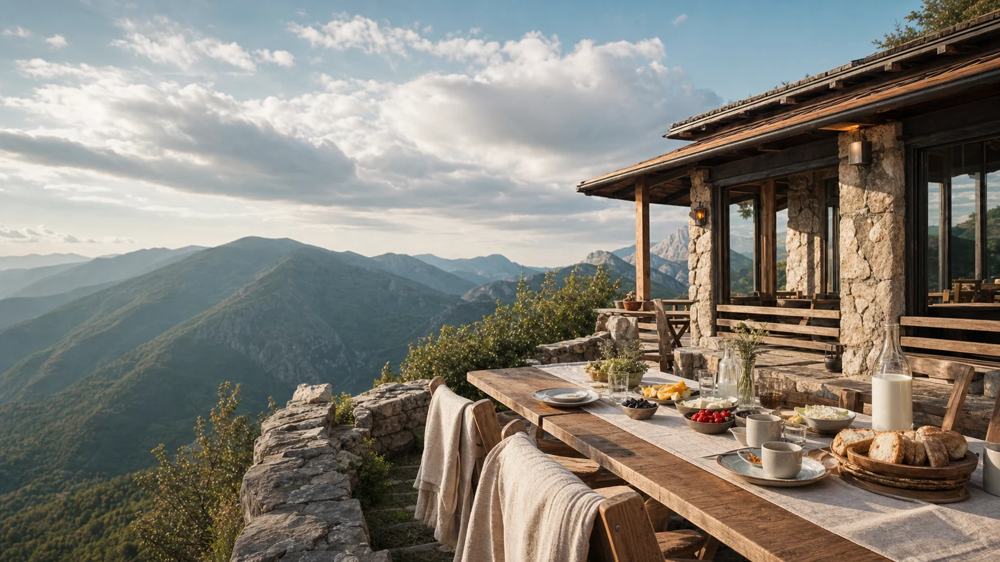
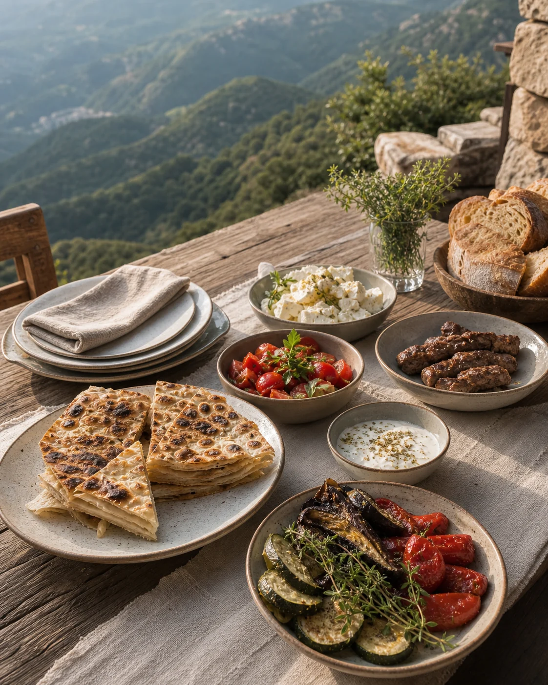
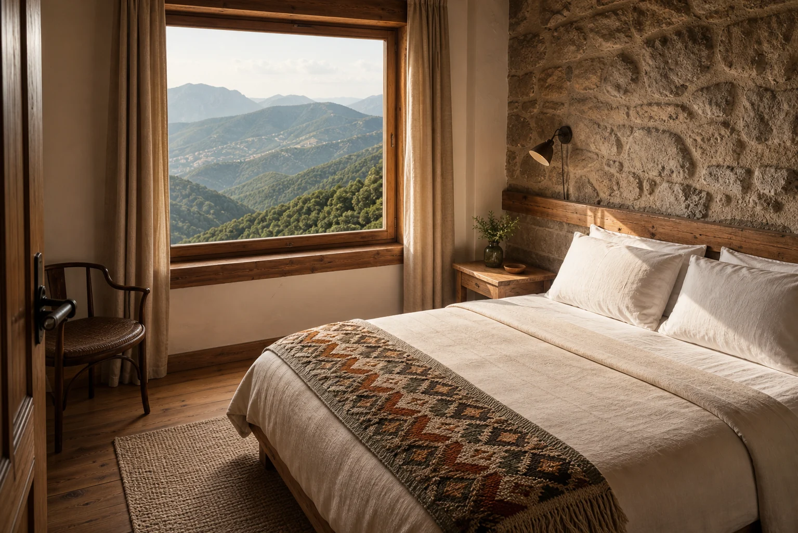

Mëngjesi i bjeshkës
Djathë vendi, vezë, kos, perime të freskëta dhe bukë e ngrohtë.

Strellc · Kosovë
Restorant dhe akomodim në zemër të malit — ushqim i mirë, ajër i pastër dhe qetësi që qëndron me ju.
Një ndalesë mbi përditshmërinë.
Filozofia jonë
Në Maja e Strellcit, tryeza është vazhdim i malit. Përbërës të freskët, gatime të njohura dhe një qasje e thjeshtë ndaj ushqimit të mirë — pa e humbur kurrë ngrohtësinë e mikpritjes sonë.

E mirë për trupin. E njohur për shpirtin.Nga mali në tryezë
Receta të vendit, produkte të freskëta dhe pjata që shijohen pa nxitim.
Rezervo një tryezë
Qëndro edhe pak
Dhoma të rehatshme, materiale natyrale dhe pamje që e bëjnë mëngjesin pjesën më të bukur të qëndrimit.
Ritmi i Majës
Ndaluni. Merrni frymë. Shikoni përtej.
Nga agimi deri te yjet
Kafe e ngrohtë, bukë nga furra dhe ajri i freskët i bjeshkës — një fillim dite që nuk kërkon nxitim.
Shije vendi, biseda të gjata dhe një pamje që ndryshon me dritën. Këtu, dreka bëhet pjesë e udhëtimit.
Kur perëndon dielli, mali hesht. Një dhomë e ngrohtë ju pret që qetësia të zgjasë edhe pak.
Më shumë se një vakt
Ejani për drekë. Qëndroni për perëndimin. Zgjohuni me horizontin.
“Këtu, koha nuk ndalet.
Thjesht ecën më bukur.”
Na gjeni në Strellc
Për tavolina, dhoma ose një ditë të plotë në natyrë, na telefononi dhe kujdesemi për pjesën tjetër.